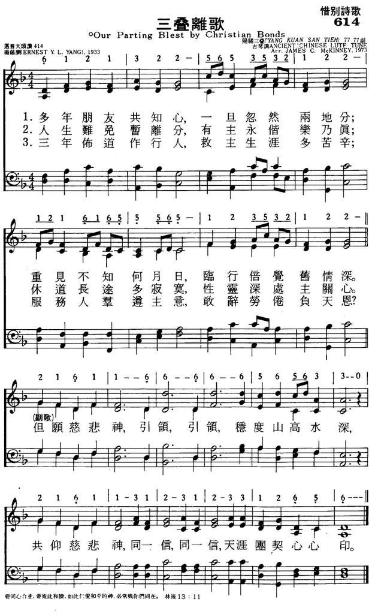

|
|
|
|
|
多年朋友共知心，一旦忽然兩地安分， (副歌) |
|
https://www.mred365.cn/szxg/7617.html

|
|
|
|
|


-
195三叠离歌（简谱版）新编赞美诗400首+短歌42首
Chinese Psalms Holy Bible
-
Chinese Protestant hymn: "San Die Li Ge"
《三叠离歌》, arr. Yang Yinliu
杨荫浏
-
杨荫浏《三叠离歌》Ernest Y. L. Yang, “Friends of Years With Just One Heart”
-
陽關三疊 ~
郭淑珍 Kuo Shu-Chen
-
陽關三疊
-
-
Guqin-Yangguan Sandie.ogg
三疊離歌
Friends of years with just one heart
杨荫浏詞曲 518.
195. 三疊離歌 (Our
Parting Blest By Christian Bonds)
Author: Ernest Y. L. Yang; Translator:
Frank W. Price; Translator:
Mildred A. Wiant
調名：阳关三叠Tune:
YANG-KUAN SAN-TIEH
詩歌賞析: 第195首
三叠离歌*
杨荫浏詞曲
经文：“弟兄们，我们暂时与你们离别，是面目离别，心里却不离别”
(帖前2：17)。
《三叠离歌》的原词和曲都是出自唐代著名诗人及画家王维的手笔，原曲名叫《渭城曲一送元二使安西》。后人演唱此曲时，又加些词句。是我国传统送别朋友所唱的一曲离别曲，原诗如下：
清明时节始当春，渭城朝雨浥轻尘，客舍青青柳色新。
劝君更尽一杯酒，西出阳关无故人
!
演唱时每次先唱王维原诗，接着添上
一、霜夜与霜晨，遄行，遄行，长途越渡关津，惆怅役此身。
历苦辛，历苦辛，历历苦辛宜自珍。
二、依依顾恋不忍离，泪滴沾巾，无复相辅仁。
参商各一垠，感怀，感怀，思君十二时辰，谁相因，谁相因，谁可相因?
日驰神，日驰神!
三、芳草遍如茵，旨酒，旨酒，未饮心已先醇。
载驰驷，载驰驷。
何日言旋轩辚，
能酌几多巡
!千巡有尽。
寸衷难泯，无穷的伤感！
楚天湘水隔远滨，期早托鸿鳞。
尺素申，尺素申，尺素频申如相亲。
如相亲，噫
!
从今一别，两地相思入梦频。
闻雁来宾。
因“渭城朝雨浥轻尘”等四句七绝，在演唱中出现三次，所以后人又把此曲叫做《阳关三叠》。
1933年，杨荫浏
(事略参阅第
13首)
已来北京，先后担任圣公会圣诗编辑委员会委员及六公会编辑《普天颂赞》的联合圣歌委员会委员，当时他亦在燕京大学音乐系进修研究。他早知此《阳关三叠》是唐代王维手笔，乃根据原韵，重新添了三叠
(三节)的“三叠离歌”，将原诗中的悲痛失望的色彩，改写成基督徒所特具的乐观、希望的“人生难免暂离分，有主永偕乐乃真”；以“愿慈悲神引领”，“共仰慈悲神，共一心，天涯团契心心印”，在主内互勉互助的离别歌。如果我们仔细比较原诗中“寸衷难泯，无穷的伤感”，和杨荫浏诗中“有主永偕乐乃真”，可以清楚地看出：信神与不信神在人生道路上的迥然不同，因而
：这首诗又成了一首为信仰作见证的离别曲。
1934年杨荫浏又配以和声，并命名该调为《阳关三叠》。
姜嘉锵演唱《阳关三叠》
清和节当春。渭城朝雨浥轻尘，客舍青青柳色新。劝君更进一杯酒，西出阳关无故人。霜夜与霜晨。遄行，遄行，长途越渡关津，惆怅役此身。历苦辛，历苦辛，历历苦辛，宜自珍，宜自珍。渭城朝雨浥轻尘，客舍青青柳色新。劝君更进一杯酒，西出阳关无故人。依依顾恋不忍离，泪滴沾巾，无复相辅仁。感怀，感怀，思君十二时辰。参商各一垠，谁相因，谁相因，谁可相因，日驰神，日驰神。 渭城朝雨浥轻尘，客舍青青柳色新。劝君更进一杯酒，西出阳关无故人！芳草遍如茵。旨酒，旨酒，未饮心已先醇。载驰骃，载驰骃，何日言旋轩辚，能酌几多巡！千巡有尽，寸衷难泯，无穷伤感。楚天湘水隔远滨，期早托鸿鳞。尺素申，尺素申，尺素频申，如相亲，如相亲。 噫！从今一别，两地相思入梦频，闻雁来宾。
《陽關三疊》，中國古曲，又名《陽關曲》、《渭城曲》。該曲取材自王維的七言絕句《送元二使安西》：“渭城朝雨浥輕塵，客舍青青柳色新。勸君更盡一杯酒，西出陽關無故人”。於唐代被編成琴歌，歌曲分三大段，疊唱原詩外，加入由原詩詩意所發展的若干詞句，為當時的梨園樂工廣為傳唱。
詩中“西出陽關無故人”一反復吟唱三遍，故名《陽關三疊》。此曲在唐代被名為《渭城曲》收集於《伊州大曲》之中，至宋代失傳，而蘇軾曾見古本《陽關》，形容為「每句皆再唱而第一句不疊」。其曲譜現存最早版本收集於1491年龔經編釋的《浙音釋字琴譜》，今殘存8段，只在第1段為王維原詩。1530年出版的《發明琴譜》亦載有此琴歌，清代張鶴據此版本改編收入其編著的《琴學入門》（1876年），今人多用《琴學入門》版本。